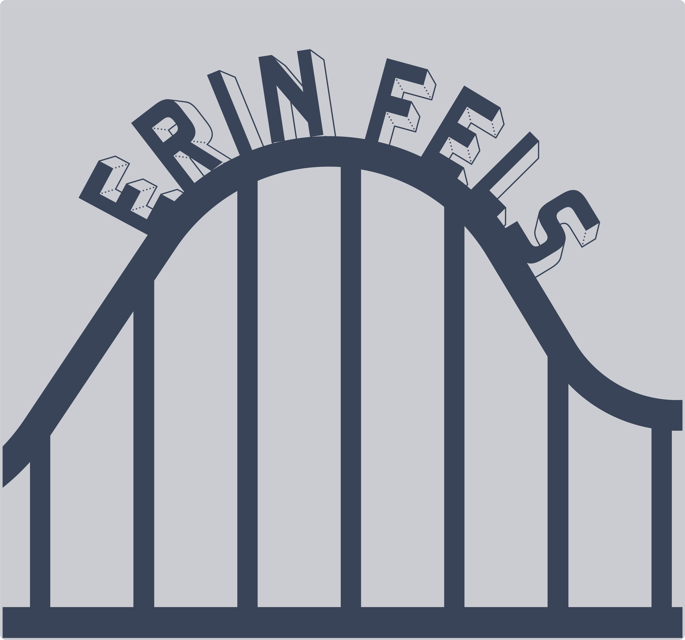
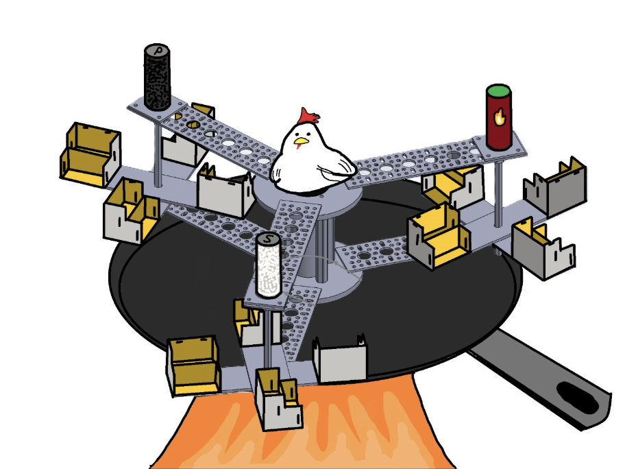
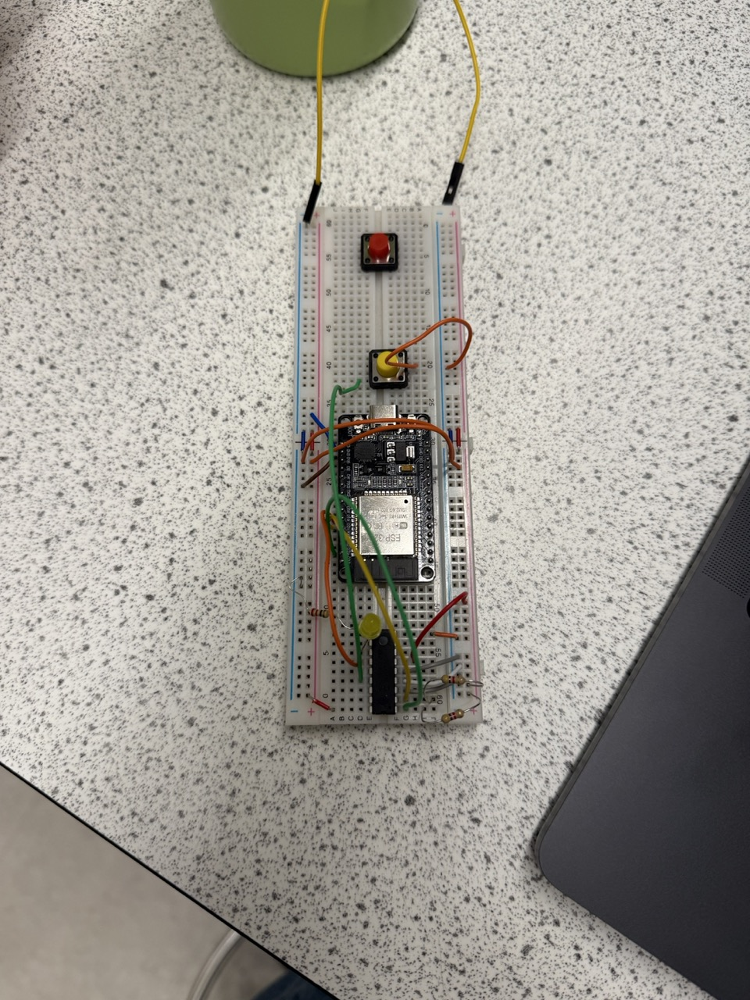

CU TPED is currently completing our second entry to the Ride Engineering Compeition this year. This year I was chosen to be our Theming Electrical Lead, where I not only help creating and make design choices for the entire time but I have also had a hand in writing and creating code for the ride. My job was primarily to work with I2C and create interrupts that will help add our safety related systems. I also have been lead on the graphic design choices of the team from logos to final desicions of what the theme would be.

Here is a circuit that I have been working on that was primarily working with just running interrupts with the MCP23008 I/O expander.
A protoype video of our ride in an unbuilt state.